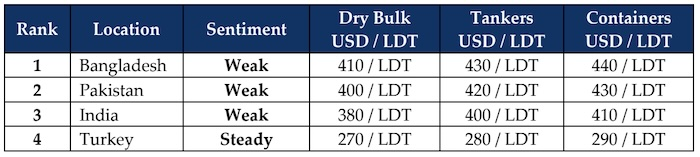

GMS Week 51 – WT…DECEMBER!
in Weekly Demolition Reports 22/12/2025

This year doesn’t cease to surprise, as December just showed what true volatility can be — in a mere two consecutive weeks at that. What a week this has certainly been, where freight rates continue to fall, the U.S. Dollar forgets which way is up, oil rises yet remains low, local steel plate prices slip oddly across the board at the various destinations, all while Turkey enjoys a forced retirement from the sidelines, watching its currency values fall ever deeper into the abyss.
To start, inflation figures that were never released in the U.S. for October due to the government shutdown did come out for November. In Trump’s “hottest country in the world,” his regime reported inflation back down to 2.7% last month. India and Bangladesh were both up, but share the same reasons to celebrate, and Turkey was mercifully down as well. The Baltic Exchange Dry Index reported an overall drop of 2.3% this week, brought on by capes, panamax, and smaller vessels collectively dragging the Baltic down by 1.4%, nearly 5%, and 36 basis points, respectively.
This could likely be brought on by the mixed signals out of the U.S. economic inflation figures, along with oil futures that barely rose 73 basis points and close the week out at a globally welcome low of USD 56.86/barrel. As freight rates continue to fall, a collection of market and private fixtures started to announce their arrivals across sub-continent beaches as famished recyclers await upcoming deliveries. And the U.S. Dollar? I’ll let the rest of the report speak for itself.
Meanwhile, with Christmas just around the corner, we can reflect on what a disastrous yet pivotal year of upgrades and change across the Indian sub-continent ship recycling markets (and even the ship recycling industry writ large) it has been, with the Hong Kong Convention for safe and responsible recycling finally coming into force on June 26 this year. With this landmark set of initiatives and guidelines finally in force, it is encouraging to see most of the previously 100+ yards HKC-certified by various classification bodies in Alang, 22 yards now in Bangladesh, and only one in Gadani (the rest clearly have some catching up to do) fully operational to a set of globally approved standards.
And just like the previous year, we have seen even lower levels of supply this year, following a 2024 that saw decade-low levels of supply. Although the performance of freight markets across all sectors has been largely responsible for the ongoing starvation in the supply of tonnage, could recent declines indicate a positive change for the ship recycling industry come 2026? Perhaps the timing in the shortage of supply was apt, as HKC upgrades and adapting to the new rules and regulations — not only for recyclers, but even local authorities to come to grips with — certainly helped everyone.
For 2026, as the average age of a trading vessel climbs from 25 years to 30 years in some cases, and ’90s-built bulkers, tankers (albeit in the shadow fleet), and containers aplenty are still trading — and due to be phased out to accommodate newbuilding vessels hitting the water next year — this should hopefully serve up a buffet for the industry. Fingers crossed, Santa!
For Week 51 of 2025, GMS Market Rankings / vessel indications are as below.

📄 Download PDF: Ship-recycling-market-insight-Week-51-12-19-2025-WT...December.pdfSource: GMS,Inc. https://www.gmsinc.net/gms_new/index.php/web
 Translate
Translate{kind=link}